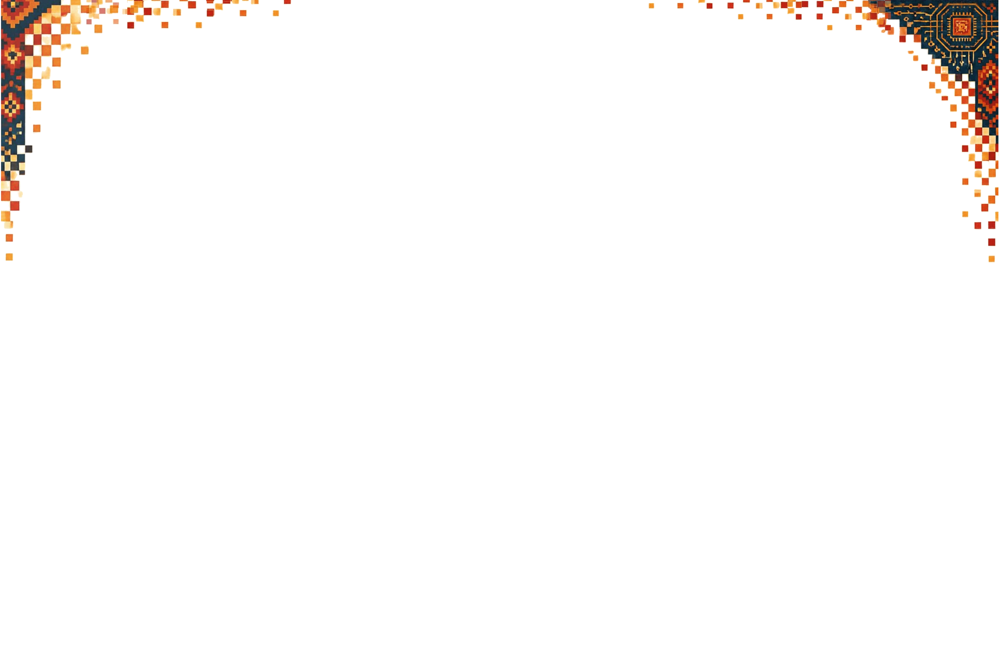
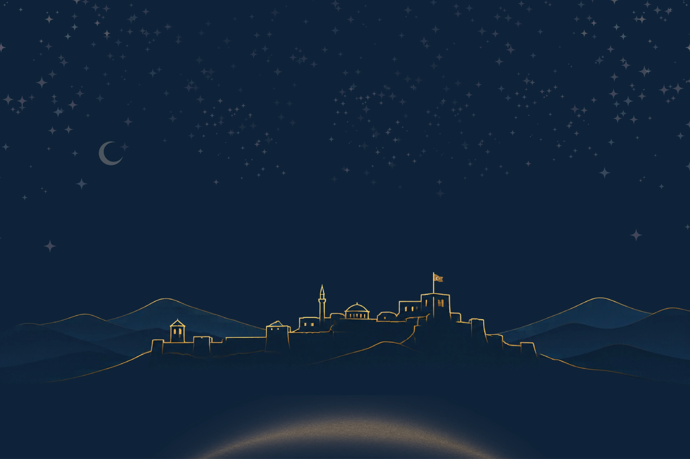

--:--
Şarkı isteTelefonunla okut
Şimdi çalıyor—

Sahnede
Kodlama sürüyor
--:--:--
Şarkı isteSıraya senin şarkın girsin.
Fotoğraf gönderCanlı galeride görün.
Şimdi çalıyor—
Sıradaki şarkılar
İlk fotoğrafı sen gönder.
Canlı galeri
Fotoğraf gönderOkut, çek, gönder.
Mola
Şimdi çalıyor—